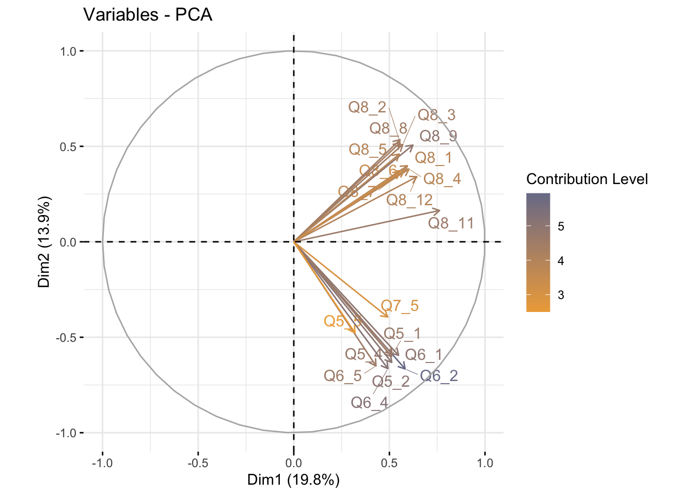
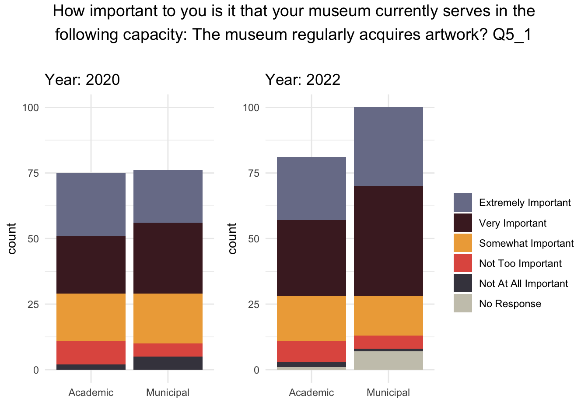
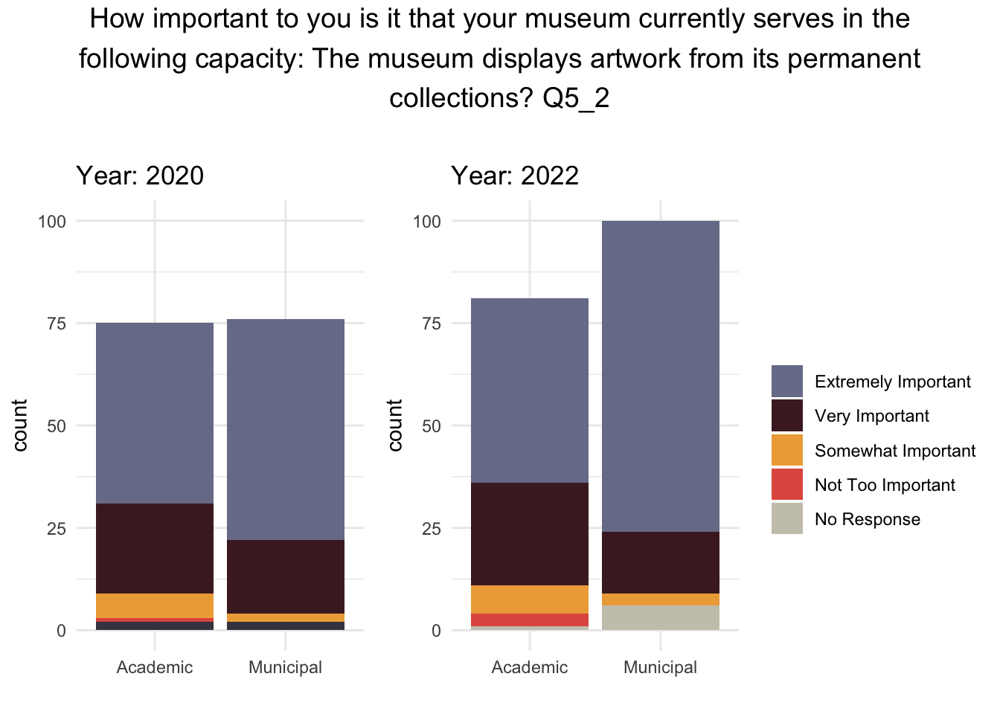
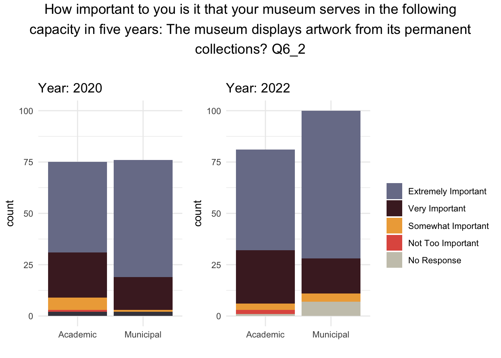
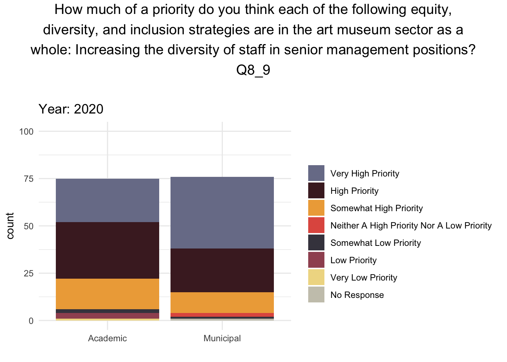
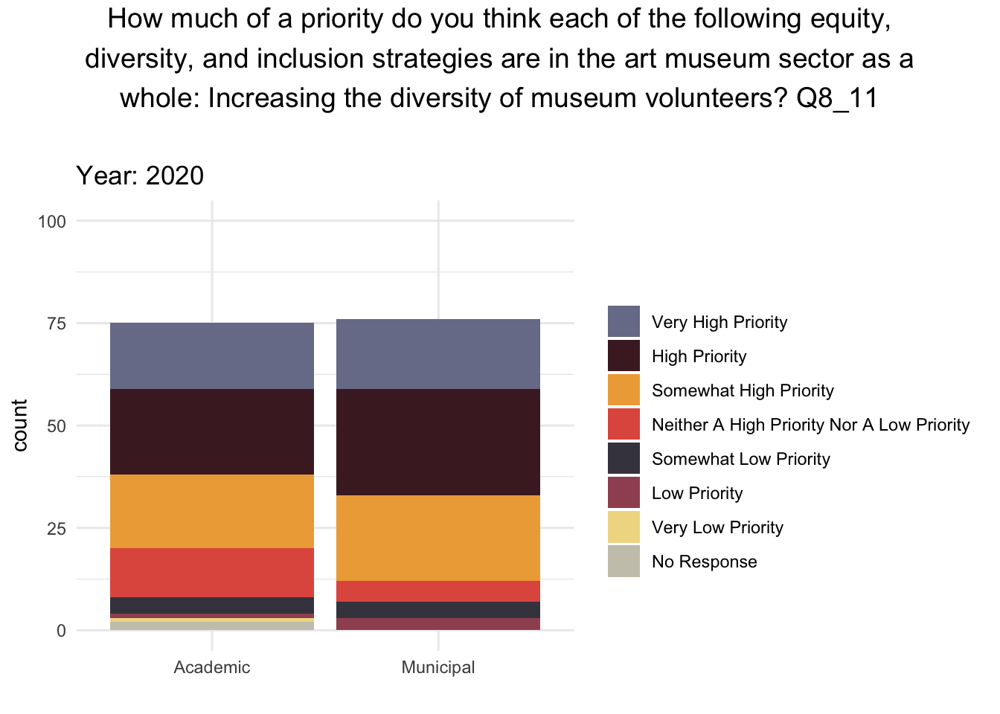

Art Museums: The Context
Art Museums are a powerful tool for social good in society. Museums, especially those with free and reduced admission fees, can cut across social barriers to accessing art, such as socioeconomic status and systemic inequality, and connect people of all ages to cultures, ideas, and images that can broaden one’s worldview. In turn, this contributes to building a world where we all understand each other just a little bit better. However, despite the potential of museums to be sites of access and education, they are also sites of social harm. Museum conditions and practices are inequitable for staff, visitors, and the artists whose work these institutions choose not to display. Offering a glimpse into the inequity within museum staffing is Max Hollein, who currently presides as the director of the Metropolitan (Met) Museum of Art in New York City. Hollein is the Met’s 10th consecutive white male director (Sayej). Further, more than 25% of art museum workers report having experienced discrimination at their current institutions, and discrimination is twice as likely for an art museum worker with a disability (“Findings”). Regarding race and ethnic groups, discrimination is particularly high for Native American/ Alaska Native workers at 39% compared to only 24% of white workers reporting that they have experienced discrimination (“Findings”).
Regarding museum visitors, there is growing discourse about the ways in which art museums overlook a demographic who has historically “been the sector’s biggest donors” : older people (Kennedy and Szántó). From the small print on wall labels, to uncomfortable gallery seating, to heavy doors at museum entrances, ageism is widespread in the sector (the art newspaper). Further evidence of this trend is found in the distribution of museum funding across different age demographics, 75% of the 2 billion dollars U.S. museums spend on education initiatives annually is devoted to programs for people under the age of 18, and the remaining 15% is for those older than 18 (Kennedy and Szántó). While educating the nation’s youth should be a priority for all, the neglect of the aging community can not be ignored.Finally, art museums also perpetuate inequity through their selections of the type of art and the artists they choose to include in exhibits. Female identifying and Black American artists are grossly underrepresented. For example, research across 31 museums in the U.S. demonstrates that works by female artists compose only 11% of all acquisitions, and Black American artists across all genders account only for 6.3% of all exhibitions (McGivern).
As we consider the current and future state of art museums and their commitments to fighting inequity, we must also consider the impact that broader social events have had on the trajectory of these institutions. Two recent events, such as the Covid-19 pandemic and murder of George Floyd, have had global impact and touched the art museum sector in different yet substantial ways. With the loss of revenue from ticket sales and event space rentals, some museums have had to cope with significant budget cuts. The Portland Art Museum cut its budget by 40% in 2020 and laid off a significant portion of its employees, changes whose impacts are still felt today (Notarianni). Additionally, Black Lives Matter protests in 2020 following the murder of George Floyd led to some museums taking a public stance on racial equality and commitment to incorporating Black art into their collections (Lynch 1). However, only time will tell if these commitments to racial equality will be delivered and what the lasting impact of the Covid-19 pandemic will be on the art museum sector.
Research Questions
One demographic with the power to improve art museums or continue perpetuating inequity, is art museum directors.In light of the pandemic and murder of Geroge Floyd, two events with global impact, we are curious how art museum directors’ opinions on diversity and equity compare in 2020 to 2022, and conduct this study using responses to the Art Museum Director Survey, in 2020 and 2022. The Art Museum Director Survey examines strategy and leadership issues, such as staffing, budgeting, and resource allocations, from the perspective of art museum directors across the U.S. Given that the 2020 survey closed on March 30th, 2020, these two surveys offer a glimpse into director opinions before and after the beginning of the pandemic and the murder of George Floyd. In our investigation we ask two questions:
1)How do survey responses in 2020 compare to responses in 2022?
2)Do patterns emerge in response types for certain topics, such as pay or accessibility?
Understanding Variability in Survey Responses
PCA Analysis
To initially explore the structure and similarities among variables and responders, we turned to unsupervised learning techniques popular in statistical modeling: Principal Component Analysis (PCA) and K-Means Clustering. We chose Dimension Reduction techniques because of the large number of survey questions we had. These techniques are excellent at identifying patterns and important features in large datasets. The goal of these preliminary plots was to understand patterns in responses and the overall influence of different survey questions in creating such patterns. Our findings would then inform which variables we decided to take a closer look at and patterns to look for between variable responses. First, we performed principal component analysis on our 2022 data, which essentially transforms the original survey data into a set of new summary variables that contain the main points of the data. These summary variables are called principal components, as you’ll notice on the x and y axis labels of the upcoming plot.
Survey Question Loading Plot

This loading plot shows the top 20 most influential variables in defining the clusters above. The longer and darker the arrows are, the more influence they have on the overall structure of the data. The information in these plots tells you a lot! First, it shows us the 20 most influential questions and, within those 20, the greatest contributors to the clustering patterns. Second, it shows the correlation between questions. If arrows, which represent each question, are pointing in the same direction, then they are positively correlated; if they are pointing in opposite directions, then they are negatively correlated; and if they are at a right angle from one another, they are uncorrelated.
Looking at the loading plot, one can see that question 6_2 is perhaps the most prominent question in this 2022 survey, while others like 8_9 and 8_11 also played a large role. What is also quite revealing about this plot is that questions are either heavily correlated with one another or completely uncorrelated. The question grouping is also intriguing. For example, not only are all of the 8_ questions included in this top 20 PCA graph, but all of them are clustered together, too. This tells us that people answered the 8_ questions similarly depending on their cluster. The same rhetoric applies to the 5_ questions.
Additionally, how people answered the 8_ questions did not affect how they chose to answer the 5 questions. Each family tends to follow a specific theme, like art pieces displayed, diversity of staff, payment of staff, and community inclusion, among others. Understanding these question families and what the root of their questioning reveals is incredibly important in understanding the priorities of museums and what sentiments they would like to promote and dismiss in their institutions. Depending on specific answers, we can understand how the display of art works connects to community inclusion, diversity of staff, and so on.
Influential Questions: Artwork
Among the most influential survey questions that contributed to the overall distribution of the 2022 survey data are questions in the 5’s and 6’s. Given that these questions were influential in impacting responses in 2022, we were curious to analyze the responses to these same questions in 2020 as well. Accordingly, we compared survey questions 5_1, 5_2, 6_1, and 6_2 in 2020 and 2022, further breaking down this data by academic vs municipal museums (generally, academic museums are tied to an academic institution while municipal museums are often funded by the government). As you’ll notice, each of these four questions revolve around artwork collection and preservation now and in five years time.




Of note is the observation that a significant amount of art museum directors at municipal museums think it is extremely important that their museum displays artwork from its permanent collections now and in five years time. This priority level was apparent in 2020 but noticeably increased in 2022. This is interesting to consider given the social context that many museums faced budget cuts following the onset of the Covid-19 pandemic. And, it is not difficult to imagine that municipal museums funded by the government as opposed to wealthier universities may have faced more financial hardship. Perhaps this importance of relying on permanent collections is connected with falling budgets to collect new artwork. Regardless of the rationale, this outlook is concerning given that permanent collections at art museums in the U.S. are “disproportionately male and overwhelmingly white” (Sutton).
Influential Questions: Diversity
In addition to questions in the 5’s and 6’s, questions in the 8’s appear to also have had a large influence on the distribution of survey responses in 2022. To glimpse into the types of questions concerning the 8’s, we analyzed question 8_9 and 8_11 in 2022 and 2020. As you will notice, both of these questions focus on the diversity of different groups of people that compose the art museum sector.


Of note is that both academic and municipal museum directors seem to find the diversity of staff in senior management positions to be more of a very high priority than the diversity of museum volunteers. Further, the amount of directors in both academic and municipal museums that consider the diversity of staff in senior management positions to a very high priority increased from 2020 to 2022.
Conclusions
This analysis is the beginning of what must be a long-term investigation and conversation on the current and future state of equity in art museums. As our findings demonstrate, there are certain questions that have a high influence on the response of art museums directors, such as questions about the sources art museums should pull from to collect works for exhibits, as well as the diversity of the various people involved in the art museum sector such as senior staff and volunteers. We must continue to challenge art museums and the directors who lead them to put racial equity at the forefront of their priorities. And importantly, we must take notice of limitations to furthering equity and diversity that are affecting museums, such as slashed budgets which may influence directors’ approach of relying on significantly white and male permanent collections instead of spending money on newer, diverse works that are more representative of different groups of people.
Sources:
“Findings, Section 4: Discrimination and Harassment.” 2022-23 Report on Workplace Equity and Organizational Culture in US Art Museums – Findings Discrimination And Harassment – Museums Moving Forward, Museums Moving Forward,museumsmovingforward.com/data-studies/2022-2023/findings-discrimination-and-harassment. Accessed 1 Apr. 2025.
Kennedy, Brian P., and András Szántó. “The next Urgent -Ism: Museums Must Change Their Ageist Ways.” The next Urgent Ism: Museums Must Change Their Ageist Ways, The Art Newspaper, 12 Jan. 2024, www.theartnewspaper.com/2024/01/12/op-ed-museums-must-address-ageism.
Lynch, Jessica, ““Interrupt the status quo”: How Black Lives Matter Changed American Museums” (2021). Student Research Submissions. 397.
McGivern, Hannah. “Art Equity Is Still a Long Way off in US Institutions, New Study Reveals.” Art Equity Is Still a Long Way off in U.S. Institutions, New Study Reveals, The Art Newspaper, 14 Dec. 2022, www.theartnewspaper.com/2022/12/13/art-equity-is-still-a-long-way-off-in-us-institutions-new-study-reveals.
Notarianni, John. “The Portland Art Museum Is Reckoning with the Pandemic - and the Art World’s Checkered History.” OPB, OPB, 5 June 2021, www.opb.org/article/2021/05/30/portland-art-museum-covid-19-pandemic/.
Sayej, Nadja. “Diversity in Spotlight as Met Museum Hires 10th White Male Director in a Row.” The Guardian, The Guardian, 16 Apr. 2018, www.theguardian.com/artanddesign/2018/apr/14/max-hollein-metropolitan-museum-art-director-diversity-debate.
Sutton, Benjamin. “A Study Found That 85% of Artists in U.S. Museum Collections Are White, and 87% Are Male.” Art Market, Artsy, 19 Feb. 2019, www.artsy.net/article/artsy-editorial-study-85-artists-museum-collections-white-87-male.
image: https://www.theguardian.com/artanddesign/2018/apr/14/max-hollein-metropolitan-museum-art-director-diversity-debate